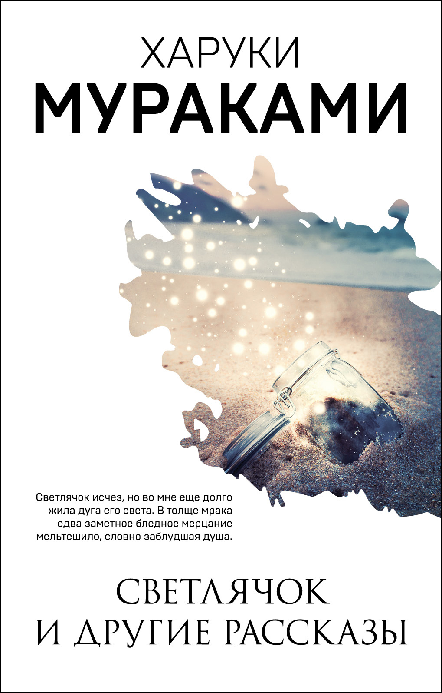

Сборник рассказов Харуки Мураками, объединяющий мистические и философские истории о жизни, одиночестве и человеческих чувствах.
«Светлячок и другие рассказы» — это сборник произведений, в которых автор исследует тонкие грани человеческой души. В рассказах переплетаются элементы реальности и фантазии, создавая уникальную атмосферу, характерную для творчества Мураками.
© 2026 Все права защищены